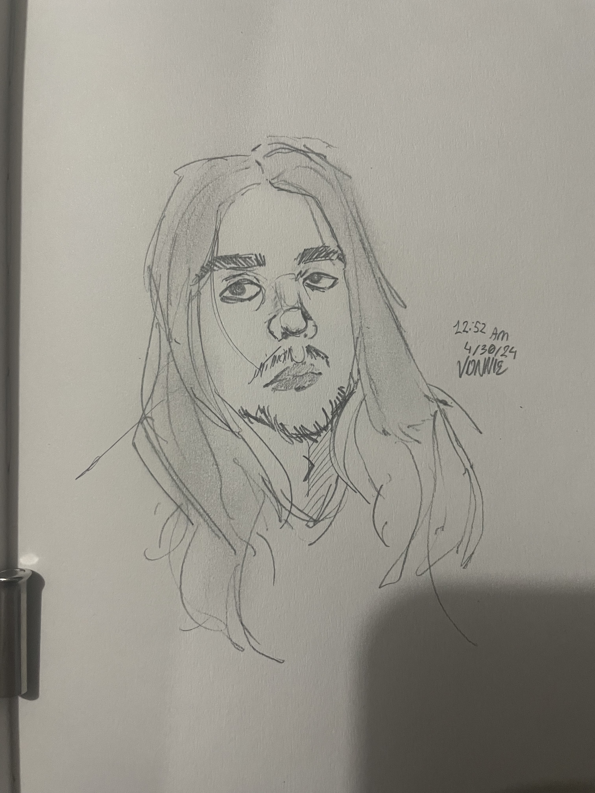

About Me
Greetings! I'm Kenny Hartwell. I'm a dedicated senior IT student at Oakland University and I'm very passionate about system administration, and Cybersecurity!!! I am 20 yrs old, and I live with my family in southeast Michigan. I enjoy reading, listening to electronic music, and playing guitar! I am an avid history enthusiast and I also love playing video games. Though I study IT, I have much experience in programming, having taken advanced university courses in areas such as Object Oriented Programming, Unix commandshell, and knowledge on how to use Linux. Although I CAN program, it is not my specialty, as I much prefer general IT diagnostics work, and desire to work in a field such as cybersecurity, as it is important to me that everyone has a rigth to privacy.
Credits Completed: 143 out of 160 for my bachelors degree in IT.